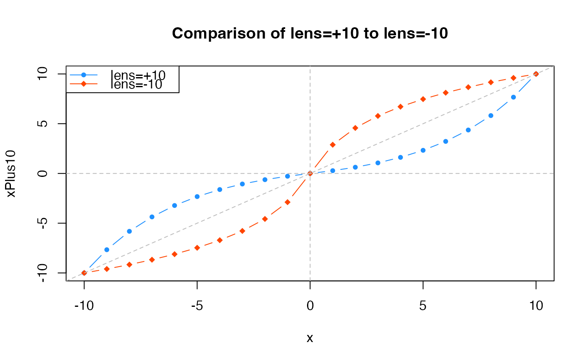
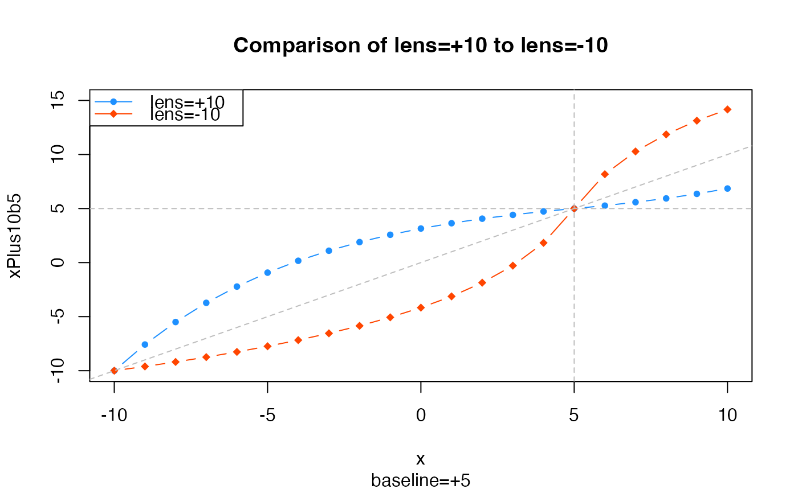

Warp a vector of numeric values relative to zero
warpAroundZero(x, lens = 5, baseline = 0, xCeiling = NULL, ...)numeric vector
numeric value which defines the lens factor,
where lens > 0 will compress values near zero, and
lens < 0 will expand values near zero and compress
values near the maximum value. If lens == 0 the
numeric values are not changed.
numeric value describing the baseline, for example
when the central value is non-zero. The baseline is subtracted
from x, the warp is applied, then the baseline is added to
the result.
numeric maximum value used for the color warp range,
useful for consistency. When xCeiling is not supplied, the
maximum difference from baseline is used. When xCeiling is
defined, and baseline is non-zero, the effective value used
is (xCeiling - baseline).
This function warps numeric values using a log curve transformation, such that values are either more compressed near zero, or more compressed near the maximum values. For example, a vector of integers from -10 to 10 would be warped so the intervals near zero were smaller than 1, and intervals farthest from zero are greater than 1.
The main driver for this function was the desire to compress divergent color scales used in heatmaps, in order to enhance smaller magnitude numeric values. Existing color ramps map the color gradient in a linear manner relative to the numeric range, which can cause extreme values to dominate the color scale. Further, a linear application of colors is not always appropriate.
Other jam numeric functions:
deg2rad(),
fix_matrix_ratio(),
noiseFloor(),
normScale(),
rad2deg(),
rowGroupMeans(),
rowRmMadOutliers()
x <- c(-10:10);
xPlus10 <- warpAroundZero(x, lens=10);
xMinus10 <- warpAroundZero(x, lens=-10);
plot(x=x, y=xPlus10, type="b", pch=20, col="dodgerblue",
main="Comparison of lens=+10 to lens=-10");
points(x=x, y=xMinus10, type="b", pch=18, col="orangered");
abline(h=0, v=0, col="grey", lty="dashed", a=0, b=1);
legend("topleft",
legend=c("lens=+10", "lens=-10"),
col=c("dodgerblue","orangered"),
pch=c(20,18),
lty="solid",
bg="white");

# example showing the effect of a baseline=5
xPlus10b5 <- warpAroundZero(x, lens=10, baseline=5);
xMinus10b5 <- warpAroundZero(x, lens=-10, baseline=5);
plot(x=x, y=xPlus10b5, type="b", pch=20, col="dodgerblue",
main="Comparison of lens=+10 to lens=-10",
ylim=c(-10,15),
sub="baseline=+5");
points(x=x, y=xMinus10b5, type="b", pch=18, col="orangered");
abline(h=5, v=5, col="grey", lty="dashed", a=0, b=1);
legend("topleft",
legend=c("lens=+10", "lens=-10"),
col=c("dodgerblue","orangered"),
pch=c(20,18),
lty="solid",
bg="white");
